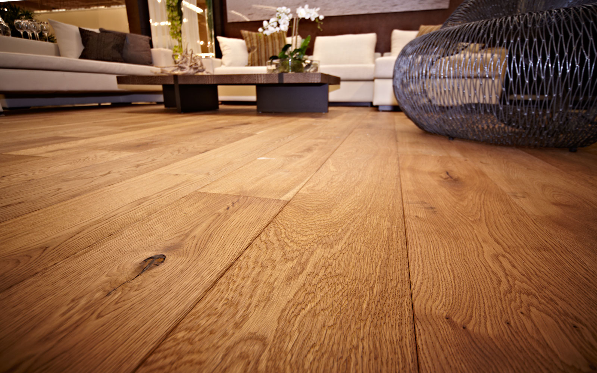

Напольные покрытия

На фото — паркетная доска в интерьере
Материалы, предназначенные для отделки пола, по своей структуре подразделяются на рулонные, жидкие, штучные и сборные.
К рулонным материалам относится линолеум, ковролин, ковровое покрытие и т.д.
Жидкие покрытия — это преимущественно наливные полы, самовыравнивающиеся стяжки и прочие решения, разработанные на полимерной основе.
Штучные материалы — это паркет, паркетная доска и прочие покрытия, которые складываются в единое целое из множества небольших элементов.
Сборные покрытия — это сухие стяжки пола, установленные с использованием плит ГКЛ, ГВЛ, ОСП, ДСП ламинированной фанеры и т.д.